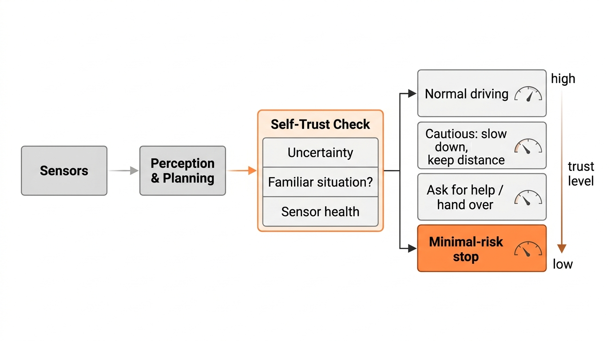

How Should Autonomous Systems Know When Not to Trust Themselves?

In one sentence
An uncertainty score on its own changes nothing — can a self-driving car or a robot actually decide "I should not trust my own prediction right now" and change how it acts because of it?
What is the problem?
Imagine a delivery robot rolling down a pavement at dusk. A shadow falls across its path, the camera is half blinded by a low sun, and its path planner says "clear, continue at 1.5 m/s." Somewhere inside the software, an uncertainty estimate has quietly jumped from 0.05 to 0.4. Nothing else happens. The robot keeps going at exactly the same speed, because nobody told the rest of the system what that number should mean.
This is surprisingly common. A lot of research has gone into making models output an honest uncertainty: a variance, an entropy, a confidence interval. Much less has gone into the next step: what should the machine do differently when that number goes up? Should it slow down? Look again? Use a simpler, more conservative controller? Pull over? Ask a person?
This open problem is about closing that loop. Not just "how uncertain am I?" but "given how much I trust myself right now, what is the right way to behave?" — and doing that in real time, on a moving vehicle, without either freezing up at every shadow or ignoring real danger.
Why does it matter?
Humans do this all the time without thinking about it. A good driver who suddenly cannot see well does not keep driving as if the road were clear. They slow down, increase the gap to the car in front, turn the wipers on, and, if it gets bad enough, pull over. The uncertainty is not the useful part; the change in behavior is.
- Safety. Most dangerous moments for an autonomous system are moments when it is wrong and does not act like it might be wrong.
- Handover. Cars with a human safety driver, and robots with a remote operator, need to know when to ask for help — early enough that the human can actually take over.
- Availability. A system that stops every time it feels slightly unsure is useless. Graded responses (slow down a little, then more, then stop) keep it useful while staying safe.
- Certification. Regulators and safety engineers want to see an explicit rule for what happens when the system is outside its comfort zone, not an implicit hope that the model will be right.
What would a solution look like?
I picture a small self-trust check sitting between the model's prediction and the vehicle's actions. It collects several kinds of evidence about whether the system is on solid ground, turns them into a single trust level, and then picks a driving mode to match.

Three ingredients make this different from simply thresholding an uncertainty score:
| Ingredient | What it means in practice |
|---|---|
| Several kinds of evidence | Model uncertainty, "have I seen a situation like this before?" (OP-13) and "are my sensors healthy?" (OP-15) are different questions and can fail independently. |
| Graded responses | Not a single on/off alarm, but a ladder of behaviors, each one cheaper to reverse than the next. |
| Context-aware cost | Being unsure on an empty motorway is not the same as being unsure next to a school. The same trust level should lead to different actions depending on what is at stake. |
The key idea: uncertainty is an input to planning, not a label on the output
The usual picture is: perception produces an answer plus a confidence, planning uses the answer, and the confidence is logged somewhere. I think the confidence has to travel forward into the planner and change its choices.
A concrete example: if the system is very sure where the pedestrian is, the planner can pass at a normal distance. If it is unsure, the "possible pedestrian" region it must avoid gets larger, and the safe speed automatically goes down. The car does not need a separate "panic" rule — the uncertainty is already shaping the space of safe actions. The hard and interesting part is that the model's uncertainty must be honest for this to work: an over-confident model shrinks those regions exactly when it should not.
Why is it hard?
- Uncertainty scores are not reliable on their own. Networks are often most over-confident on exactly the strange inputs where we need caution (see OP-01).
- Different uncertainties need different reactions. "The sensor is noisy" (wait, look again) is not the same as "I have never seen this object" (keep clear, maybe ask for help). Mixing them into one number loses that.
- Being too cautious is also unsafe. A car that brakes hard for every shadow gets rear-ended. Sudden mode switches can themselves cause accidents.
- Humans are slow to take over. A handover request that arrives one second before a problem is often useless; a human driver may need several seconds to re-engage.
- Hard to test. The situations where self-distrust matters are rare by definition, so it is difficult to collect enough of them to check that the policy behaves well.
What has been tried so far
- Better uncertainty estimates — ensembles, MC dropout, Bayesian layers, and separating "noise in the data" from "lack of knowledge in the model". These give a better number, but do not say what to do with it.
- Safety envelopes and fallback controllers — a simple, verified controller (or a "minimal-risk maneuver" like a controlled stop) takes over when the main system leaves a safe region. Robust, but often an all-or-nothing switch.
- Uncertainty-aware planning — planners that treat the world state as a probability distribution and choose actions that are safe across many possibilities. Principled, but expensive and only as good as the probabilities they are given.
- Learning when to defer — training a model to hand difficult cases to a human or an expert system. Well studied for classification, much less for continuous control on a moving vehicle.
- Introspective perception — training a separate component to predict when the perception system is likely to fail, from its inputs and internal state.
Each of these solves a piece. What is still missing, I think, is a clear framework that connects which kind of distrust the system has to which kind of response it chooses — and a way to test that this connection actually reduces risk.
How I would approach it
- Start in simulation (for example a driving simulator), where I can control exactly how hard the situation is: fog, sensor dropouts, unusual objects.
- Give the self-trust check separate signals for model uncertainty, novelty and sensor health, rather than one score.
- Define a small ladder of behaviors — normal, cautious, request help, minimal-risk stop — and compare simple rules against a learned policy for choosing between them.
- Measure two things together: how often the system ends up in a dangerous state, and how much it unnecessarily slows down or stops. A good policy should improve the first without wrecking the second.
Questions still open
- Which kinds of uncertainty should lead to which kinds of action, and can that mapping be learned rather than hand-written?
- How do we avoid "flickering" between modes when the trust level hovers around a threshold?
- How early must a handover request come for a human to take over safely, and can the system predict its own distrust that far ahead? (see OP-14)
- Can an attacker make a car distrust itself on purpose — for example to force it to stop in the middle of a road?
- How should we test a self-distrust policy when the situations it is designed for are, by definition, rare?
- When a fleet of vehicles learns together (federated learning), can they share what made them distrust themselves without sharing raw data? (see OP-10, OP-11)
This problem is the "action" half of several others: detecting failure before it happens (OP-01), recognizing never-seen situations on the road (OP-13), and staying reliable when sensors fail (OP-15).
Work on this together
If you work on uncertainty estimation, safe planning, robotics, or human–machine handover — or you run real vehicles or robots and have seen your system be confidently wrong — I would love to talk. Telling me the framing is wrong is equally welcome.
Reach out about OP-12Further reading
- Amodei et al. — Concrete Problems in AI Safety (arXiv 2016)
- Kendall & Gal — What Uncertainties Do We Need in Bayesian Deep Learning for Computer Vision? (NeurIPS 2017)
- Gal & Ghahramani — Dropout as a Bayesian Approximation (ICML 2016)
- Lakshminarayanan et al. — Simple and Scalable Predictive Uncertainty Estimation using Deep Ensembles (NeurIPS 2017)
- Shalev-Shwartz, Shammah & Shashua — On a Formal Model of Safe and Scalable Self-driving Cars (arXiv 2017)
- Kahn et al. — Uncertainty-Aware Reinforcement Learning for Collision Avoidance (arXiv 2017)